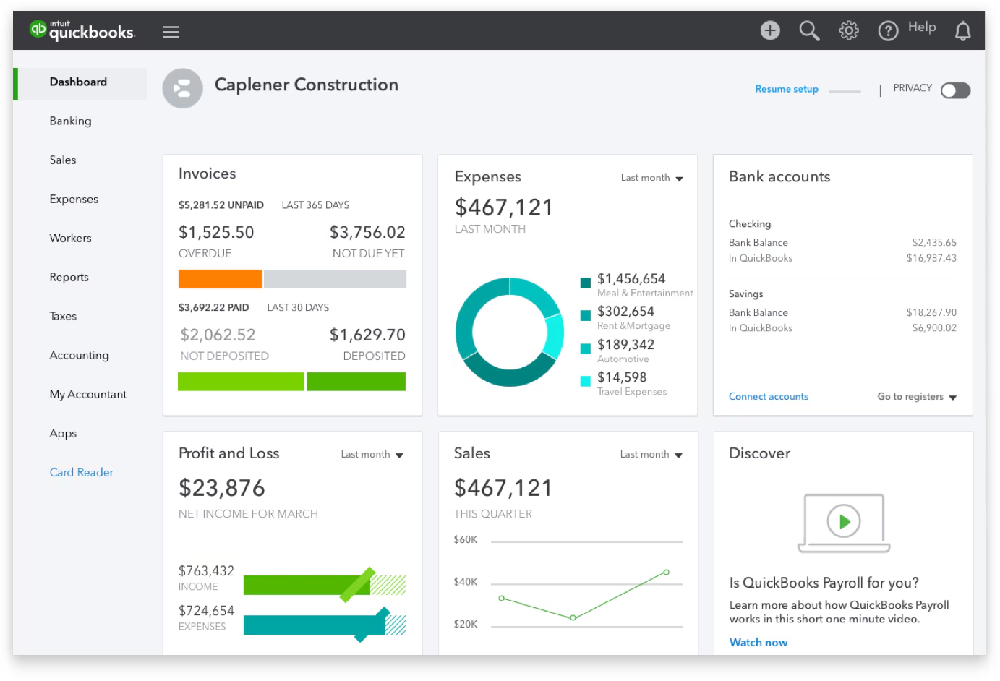
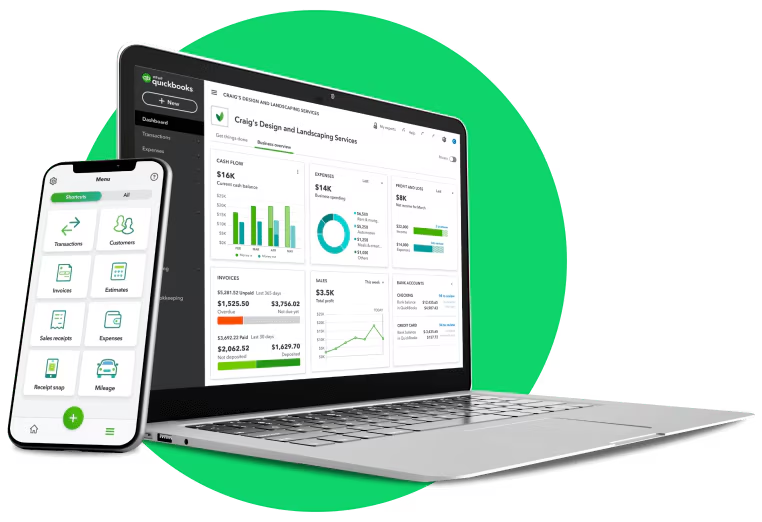

SHORT ON TIME? HERE’S A QUICK SUMMARY
QuickBooks Online is a versatile accounting software and app designed for small businesses, enabling you to manage your operations anytime, anywhere. Trusted by over 8 million users worldwide, QuickBooks combines powerful business tools with an intuitive interface. It allows you to organize your finances, track expenses, send invoices, manage inventory, and handle payroll with ease. By adding payment features, you can save time and get paid faster. Plus, with a 30-day free trial, you can explore everything QuickBooks has to offer risk-free.
QuickBooks Online is a versatile accounting software and app designed for small businesses, enabling you to manage your operations anytime, anywhere. Trusted by over 8 million users worldwide, QuickBooks combines powerful business tools with an intuitive interface. It allows you to organize your finances, track expenses, send invoices, manage inventory, and handle payroll with ease. By adding payment features, you can save time and get paid faster. Plus, with a 30-day free trial, you can explore everything QuickBooks has to offer risk-free.
👍 PROS:
- Comprehensive contact records and transaction templates
- Advanced inventory management and time tracking tools
- Wide variety of customizable reports
- Supports project management, payroll, and various add-ons
- Convenient and functional mobile applications
- Integrates with 750+ apps like Amazon, Square, Shopify, and PayPal
- Offers built-in reports including profit and loss, trial balance, and more
- AI integrations like Intuit Assist, Business Performance Overview, and other AI tools
- Easily share data with accountants and access QuickBooks experts and resources
- Chat and phone support available Monday to Saturday with all plans.
👎 CONS:
- Mobile app lacks certain features
- User limits vary by plan; choose based on your team size
Get Quickbooks - Simplify your business with powerful accounting software
SEE WHAT USERS HAVE TO SAY
"Submitting to HMRC can be a daunting task, especially when you're unsure about the process—it definitely caused me some anxiety! Thankfully, I connected with Samuel from QuickBooks support, and he was fantastic. He guided me through the new submission process with patience and clarity, making everything much easier to understand. As a bonus, he also helped me correctly file a few tricky transactions I was struggling with. Overall, it was an excellent experience, and I highly recommend their support team!"
"So far I have found quickbooks to be easy to use. There is guidance available for newbies like myself although I have come from an accountancy background which helps. I booked the free 45 minute onboarding session which was extremely useful. The Quickbooks expert was very knowledgeable and answered the areas that I was stumbling on, guiding me to solutions by sharing my screen.”
“The company understands that small businesses want to keep their accounts simple and may need to adapt standard accounting for their purposes. I sell books and do 'cash accounting' for my records including VAT, based on the activity of my bank account. But I needed to account for payments from Amazon where they had charged VAT relating to the payment, but retained some of the amount payable in a 'reserve' account. Help was on hand with screen share and a phone call with one of their advisors who talked me through how to go about this.(They had previously talked me through how to incorporate selling fees in a similar way and also how to 'split' payments to Royal Mail for International and Domestic postage).”
WHAT IS INTUIT QUICKBOOKS?
Intuit QuickBooks is a comprehensive accounting software suite developed by Intuit Inc., designed to assist small and medium-sized businesses in managing their financial operations. Launched in 1992, QuickBooks offers both on-premises and cloud-based solutions, enabling users to handle tasks such as invoicing, expense tracking, payroll processing, and financial reporting.
The software integrates with various third-party applications, enhancing its functionality to meet diverse business needs. QuickBooks is available in multiple versions tailored to specific industries and business sizes, providing flexibility and scalability. Its user-friendly interface and robust feature set have made it a leading choice for businesses aiming to streamline their accounting processes.
WHO SHOULD USE INTUIT QUICKBOOKS?
Intuit QuickBooks is ideal for small to medium-sized businesses, freelancers, and self-employed professionals who need an efficient and reliable accounting solution. It’s particularly beneficial for:
Business Owners: Those who want to streamline financial management, including invoicing, expense tracking, payroll, and tax preparation.
Freelancers and Entrepreneurs: Individuals managing their own finances who need simple tools for tracking income, expenses, and mileage.
Growing Businesses: Companies looking for scalable software with features like inventory management, project tracking, and advanced reporting.
Teams Needing Collaboration: Businesses requiring multi-user access and seamless integration with third-party tools like CRM systems, POS platforms, and e-commerce solutions.
Accountants and Bookkeepers: Professionals seeking software widely trusted and recognized for compatibility and ease of use with clients’ financial data.
Whether you’re just starting or managing an established business, QuickBooks offers the tools to simplify and optimize your accounting processes.
WHAT ARE THE FEATURES?
Starting a business can be overwhelming, but good accounting software like QuickBooks Online simplifies financial management by automating tedious and error-prone tasks. Here’s a closer look at some of its standout features:
Bank Reconciliation: QuickBooks simplifies bank reconciliation with automatic bank feeds that import checking and credit card transactions. Its smart reconciliation tools automatically match bank transactions with those entered into the software, saving you time and reducing errors. Custom banking rules further streamline the process, and the software can even extract vendor names from unorganized data—eliminating the need for manual sorting.
Automation: QuickBooks excels in automation, offering tools like automated payment reminders, recurring invoices, and bill payments. Data is automatically backed up to the cloud, and the software supports foreign currency bank account matching—an invaluable feature for globally operating businesses. Recent machine learning enhancements enable QuickBooks to "learn" your spending habits, better categorize expenses, and prompt you when additional input is needed, keeping your finances accurate and efficient.
Artificial Intelligence: The AI-powered Intuit Assist chatbot is one of QuickBooks Online’s most exciting features. It analyzes your finances, answers accounting questions, anticipates follow-up queries, and provides actionable suggestions, such as reminding you about unpaid invoices. This innovative tool enhances the user experience and offers a competitive edge.
Invoicing: QuickBooks Online’s invoicing features are more robust than many competitors’:
Mobile optimization: Create and send invoices via browser or mobile app, or even invoice directly from Gmail.
Payment button: Add payment buttons through QuickBooks Payments or third-party processors like PayPal or Square for quick customer payments.
Estimate creation: Generate estimates and convert them to invoices with a single click.
Recurring invoices and reminders: Automate recurring invoices, billable hours tracking, and payment reminders, simplifying ongoing billing tasks.
Inventory Management: QuickBooks Online offers excellent inventory features for Plus and Advanced plan users. Manage inventory, create purchase orders, and track stock levels with real-time updates. Features like bundling frequently sold products, low-stock alerts, and automatic purchase order-to-bill conversion ensure efficiency. On-demand inventory reports provide insights into product performance, helping businesses optimize inventory management.
Project Management: QuickBooks Online includes project management tools that allow you to track project profitability, manage labor costs, and monitor expenses. This feature is particularly beneficial for businesses that handle multiple projects simultaneously.
Time Tracking: The platform offers time tracking capabilities, enabling you to record billable hours and integrate them directly into invoices. This ensures accurate billing and helps in managing employee time effectively.
Reporting and Analytics: QuickBooks Online excels in report generation, offering a wide range of built-in reports that outshine many competitors. These include aged receivables, general ledger, profit-and-loss statements, balance sheets, and trial balance reports. You can mark frequently used reports as favorites for quick access and set up automated report generation and email scheduling.
Recently, QuickBooks introduced advanced forecasting and budgeting tools, enabling small business owners to plan finances more effectively. Custom reports now feature enhanced visualizations, providing actionable insights that help you make smarter, data-driven decisions.
Third-Party Integrations: One of QuickBooks Online’s standout features is its extensive integration capabilities. The software syncs seamlessly with more than 750 business apps, including top solutions like Amazon Business, Square, Shopify, PayPal, QuickBooks Time, Fathom, and SOS Inventory.
This integration reduces the need for manual data transfers, connecting QuickBooks with POS systems, online stores, CRM platforms, project management tools, payroll systems, and more. These integrations allow you to streamline workflows and ensure your business processes remain efficient and connected.
QuickBooks Online combines powerful features with automation and AI-driven tools, making it a top choice for businesses seeking comprehensive and efficient accounting solutions.
IS IT EASY TO USE?
After testing QuickBooks, we found it intuitive and easy to navigate, even for new users. While the feature-rich interface can occasionally feel crowded, its layout is logical and user-friendly. For those unfamiliar with GAAP accounting, QuickBooks offers helpful data visualization tools that simplify complex concepts. The dashboard provides graphs summarizing sales trends, income, expenses, and profit-and-loss data, all of which are clickable for more detailed insights. You can also customize the date range for each graph, making it easier to track specific periods.
We were particularly impressed by the flexibility in customizing invoices and forms. QuickBooks offers a variety of templates, accent colors, fonts, and font sizes, along with the ability to upload and position your logo or brand image. You can tailor headers, choose which columns appear in the invoice body, adjust their labels and widths, and even add personalized messages in the footer. This level of customization allows businesses to create professional and branded invoices with ease.
USER INTERFACE
QuickBooks Online is designed to simplify accounting with an intuitive and user-friendly interface. Once you sign up and log in, you’ll be greeted by the main dashboard, which provides an organized overview of your business’s financial data. Key metrics like profit and loss, invoices, expenses, and sales are displayed clearly, allowing you to monitor your financial health at a glance.
The interface is clean and straightforward, with a navigation menu on the left for accessing different sections such as Banking and Sales. Its layout is visually appealing, with charts and summaries that make financial data easy to understand, even for users without extensive accounting knowledge.
Collaboration is seamless, as QuickBooks Online allows you to invite your bookkeeper or accountant directly through the platform. If you don’t have one, the software helps you connect with certified QuickBooks professionals. Additionally, transitioning from another accounting system is straightforward—QuickBooks lets you import existing files to get started quickly.
For new users, QuickBooks offers video tutorials and other resources to ensure you can navigate the platform with confidence. With its intuitive design and support options, QuickBooks Online makes managing your business finances easier and more efficient.
DESKTOP AND MOBILE APPS
QuickBooks Online’s mobile app allows you to manage your business on the go with ease. From viewing dashboard data to creating and sending invoices, the app lets you perform multiple accounting tasks wherever you are. You can accept payments, capture receipts and attach them to expenses, reconcile transactions, and even view customer information or message customers directly. During testing, we found the app well-organized, intuitive, and highly functional, making it a valuable tool for business owners who need flexibility.
Unlike cloud-based solutions, QuickBooks desktop is ideal for users who prioritize offline accessibility and data control. It supports complex financial needs with industry-specific editions and customizable workflows, making it a trusted choice for small to medium-sized businesses.
IS IT SAFE AND SECURE?
Yes, QuickBooks is designed with robust security measures to ensure the safety and privacy of your financial data. Key security features include:
Advanced Encryption: QuickBooks employs 128-bit Secure Sockets Layer (SSL) encryption, the same technology used by leading banks, to protect data during transmission.
Firewall Protection: The platform utilizes firewall-protected servers to prevent unauthorized access.
Automatic Data Backups: QuickBooks automatically backs up your data, ensuring it's securely stored and accessible when needed.
User Permissions: You control who accesses your data and what they can see and do, with multiple permission levels to limit access privileges.
Activity Logs and Audit Trails: The platform offers Always-On Activity Log and Audit Trail features, recording every login and any changes made to financial transactions, ensuring accountability.
These measures demonstrate QuickBooks Online's commitment to maintaining a secure environment for your financial information.
IS THERE A FREE VERSION?
QuickBooks does not offer a permanently free version; however, new users can take advantage of a 30-day free trial to explore its features. This trial period allows you to assess the software's capabilities before committing to a subscription. Additionally, QuickBooks Online Accountant is available at no cost, providing accounting professionals with tools to manage their clients' finances effectively.
HOW MUCH IS IT?
QuickBooks Online offers several subscription plans to accommodate various business needs, each with its own pricing structure:
Simple Start: Priced at $35 per month, this plan is ideal for small businesses and startups with basic accounting requirements.
Essentials: At $65 per month, the Essentials plan caters to businesses requiring multi-user access and enhanced billing and reporting features.
Plus: For $99 per month, the Plus plan is designed for small to medium-sized businesses needing inventory management and project profitability tracking.
Advanced: The Advanced plan, costing $235 per month, suits growing businesses approaching mid-market size that need advanced tracking and reporting capabilities.
QuickBooks frequently offers promotional discounts for new customers, such as 50% off the monthly price for the first three months of service. Additionally, a 30-day free trial is available, allowing users to explore the platform's features before committing to a subscription.
It's important to note that these prices are subject to change and may vary based on current promotions. For the most accurate and up-to-date pricing information, click on the button down below to access QuickBooks Online pricing page.
CUSTOMER SUPPORT
In a time when many cloud-based solutions fall short on customer service, QuickBooks stands out by offering a wide range of support options. Users can access help via phone or live chat, explore the extensive knowledge base on the company’s website, or seek advice in the community forum. For self-guided learning, QuickBooks provides tutorial videos, webinars, and training classes. Additionally, the company’s blog is updated monthly with details about new features, software updates, and articles relevant to small business owners.
For those who prefer in-person assistance, QuickBooks connects you with certified local QuickBooks ProAdvisors. These experts can provide personalized guidance to help you maximize the software's potential for your business. While QuickBooks may come at a higher price point than some alternatives, its robust customer support ensures users get exceptional value for their investment.
BOTTOMLINE
QuickBooks Online is an excellent choice for business owners seeking a widely recognized and trusted accounting solution. Its reputation among accountants and bookkeepers makes it a reliable option for managing financial tasks. Additionally, its seamless integration with numerous third-party apps ensures flexibility and efficiency, making it a valuable tool for businesses that require versatile software to meet diverse needs.
"Submitting to HMRC can be a daunting task, especially when you're unsure about the process—it definitely caused me some anxiety! Thankfully, I connected with Samuel from QuickBooks support, and he was fantastic. He guided me through the new submission process with patience and clarity, making everything much easier to understand. As a bonus, he also helped me correctly file a few tricky transactions I was struggling with. Overall, it was an excellent experience, and I highly recommend their support team!"
"So far I have found quickbooks to be easy to use. There is guidance available for newbies like myself although I have come from an accountancy background which helps. I booked the free 45 minute onboarding session which was extremely useful. The Quickbooks expert was very knowledgeable and answered the areas that I was stumbling on, guiding me to solutions by sharing my screen.”
“The company understands that small businesses want to keep their accounts simple and may need to adapt standard accounting for their purposes. I sell books and do 'cash accounting' for my records including VAT, based on the activity of my bank account. But I needed to account for payments from Amazon where they had charged VAT relating to the payment, but retained some of the amount payable in a 'reserve' account. Help was on hand with screen share and a phone call with one of their advisors who talked me through how to go about this.(They had previously talked me through how to incorporate selling fees in a similar way and also how to 'split' payments to Royal Mail for International and Domestic postage).”
WHAT IS INTUIT QUICKBOOKS?
Intuit QuickBooks is a comprehensive accounting software suite developed by Intuit Inc., designed to assist small and medium-sized businesses in managing their financial operations. Launched in 1992, QuickBooks offers both on-premises and cloud-based solutions, enabling users to handle tasks such as invoicing, expense tracking, payroll processing, and financial reporting.
The software integrates with various third-party applications, enhancing its functionality to meet diverse business needs. QuickBooks is available in multiple versions tailored to specific industries and business sizes, providing flexibility and scalability. Its user-friendly interface and robust feature set have made it a leading choice for businesses aiming to streamline their accounting processes.
WHO SHOULD USE INTUIT QUICKBOOKS?
Intuit QuickBooks is ideal for small to medium-sized businesses, freelancers, and self-employed professionals who need an efficient and reliable accounting solution. It’s particularly beneficial for:
Whether you’re just starting or managing an established business, QuickBooks offers the tools to simplify and optimize your accounting processes.
WHAT ARE THE FEATURES?
Starting a business can be overwhelming, but good accounting software like QuickBooks Online simplifies financial management by automating tedious and error-prone tasks. Here’s a closer look at some of its standout features:
Bank Reconciliation: QuickBooks simplifies bank reconciliation with automatic bank feeds that import checking and credit card transactions. Its smart reconciliation tools automatically match bank transactions with those entered into the software, saving you time and reducing errors. Custom banking rules further streamline the process, and the software can even extract vendor names from unorganized data—eliminating the need for manual sorting.
Automation: QuickBooks excels in automation, offering tools like automated payment reminders, recurring invoices, and bill payments. Data is automatically backed up to the cloud, and the software supports foreign currency bank account matching—an invaluable feature for globally operating businesses. Recent machine learning enhancements enable QuickBooks to "learn" your spending habits, better categorize expenses, and prompt you when additional input is needed, keeping your finances accurate and efficient.
Artificial Intelligence: The AI-powered Intuit Assist chatbot is one of QuickBooks Online’s most exciting features. It analyzes your finances, answers accounting questions, anticipates follow-up queries, and provides actionable suggestions, such as reminding you about unpaid invoices. This innovative tool enhances the user experience and offers a competitive edge.
Invoicing: QuickBooks Online’s invoicing features are more robust than many competitors’:
Inventory Management: QuickBooks Online offers excellent inventory features for Plus and Advanced plan users. Manage inventory, create purchase orders, and track stock levels with real-time updates. Features like bundling frequently sold products, low-stock alerts, and automatic purchase order-to-bill conversion ensure efficiency. On-demand inventory reports provide insights into product performance, helping businesses optimize inventory management.
Project Management: QuickBooks Online includes project management tools that allow you to track project profitability, manage labor costs, and monitor expenses. This feature is particularly beneficial for businesses that handle multiple projects simultaneously.
Time Tracking: The platform offers time tracking capabilities, enabling you to record billable hours and integrate them directly into invoices. This ensures accurate billing and helps in managing employee time effectively.
Reporting and Analytics: QuickBooks Online excels in report generation, offering a wide range of built-in reports that outshine many competitors. These include aged receivables, general ledger, profit-and-loss statements, balance sheets, and trial balance reports. You can mark frequently used reports as favorites for quick access and set up automated report generation and email scheduling.
Recently, QuickBooks introduced advanced forecasting and budgeting tools, enabling small business owners to plan finances more effectively. Custom reports now feature enhanced visualizations, providing actionable insights that help you make smarter, data-driven decisions.
Third-Party Integrations: One of QuickBooks Online’s standout features is its extensive integration capabilities. The software syncs seamlessly with more than 750 business apps, including top solutions like Amazon Business, Square, Shopify, PayPal, QuickBooks Time, Fathom, and SOS Inventory.
This integration reduces the need for manual data transfers, connecting QuickBooks with POS systems, online stores, CRM platforms, project management tools, payroll systems, and more. These integrations allow you to streamline workflows and ensure your business processes remain efficient and connected.
QuickBooks Online combines powerful features with automation and AI-driven tools, making it a top choice for businesses seeking comprehensive and efficient accounting solutions.

IS IT EASY TO USE?
After testing QuickBooks, we found it intuitive and easy to navigate, even for new users. While the feature-rich interface can occasionally feel crowded, its layout is logical and user-friendly. For those unfamiliar with GAAP accounting, QuickBooks offers helpful data visualization tools that simplify complex concepts. The dashboard provides graphs summarizing sales trends, income, expenses, and profit-and-loss data, all of which are clickable for more detailed insights. You can also customize the date range for each graph, making it easier to track specific periods.
We were particularly impressed by the flexibility in customizing invoices and forms. QuickBooks offers a variety of templates, accent colors, fonts, and font sizes, along with the ability to upload and position your logo or brand image. You can tailor headers, choose which columns appear in the invoice body, adjust their labels and widths, and even add personalized messages in the footer. This level of customization allows businesses to create professional and branded invoices with ease.
USER INTERFACE
QuickBooks Online is designed to simplify accounting with an intuitive and user-friendly interface. Once you sign up and log in, you’ll be greeted by the main dashboard, which provides an organized overview of your business’s financial data. Key metrics like profit and loss, invoices, expenses, and sales are displayed clearly, allowing you to monitor your financial health at a glance.
The interface is clean and straightforward, with a navigation menu on the left for accessing different sections such as Banking and Sales. Its layout is visually appealing, with charts and summaries that make financial data easy to understand, even for users without extensive accounting knowledge.
Collaboration is seamless, as QuickBooks Online allows you to invite your bookkeeper or accountant directly through the platform. If you don’t have one, the software helps you connect with certified QuickBooks professionals. Additionally, transitioning from another accounting system is straightforward—QuickBooks lets you import existing files to get started quickly.
For new users, QuickBooks offers video tutorials and other resources to ensure you can navigate the platform with confidence. With its intuitive design and support options, QuickBooks Online makes managing your business finances easier and more efficient.
DESKTOP AND MOBILE APPS
QuickBooks Online’s mobile app allows you to manage your business on the go with ease. From viewing dashboard data to creating and sending invoices, the app lets you perform multiple accounting tasks wherever you are. You can accept payments, capture receipts and attach them to expenses, reconcile transactions, and even view customer information or message customers directly. During testing, we found the app well-organized, intuitive, and highly functional, making it a valuable tool for business owners who need flexibility.
Unlike cloud-based solutions, QuickBooks desktop is ideal for users who prioritize offline accessibility and data control. It supports complex financial needs with industry-specific editions and customizable workflows, making it a trusted choice for small to medium-sized businesses.

IS IT SAFE AND SECURE?
Yes, QuickBooks is designed with robust security measures to ensure the safety and privacy of your financial data. Key security features include:
These measures demonstrate QuickBooks Online's commitment to maintaining a secure environment for your financial information.
IS THERE A FREE VERSION?
QuickBooks does not offer a permanently free version; however, new users can take advantage of a 30-day free trial to explore its features. This trial period allows you to assess the software's capabilities before committing to a subscription. Additionally, QuickBooks Online Accountant is available at no cost, providing accounting professionals with tools to manage their clients' finances effectively.
HOW MUCH IS IT?
QuickBooks Online offers several subscription plans to accommodate various business needs, each with its own pricing structure:
Simple Start: Priced at $35 per month, this plan is ideal for small businesses and startups with basic accounting requirements.
Essentials: At $65 per month, the Essentials plan caters to businesses requiring multi-user access and enhanced billing and reporting features.
Plus: For $99 per month, the Plus plan is designed for small to medium-sized businesses needing inventory management and project profitability tracking.
Advanced: The Advanced plan, costing $235 per month, suits growing businesses approaching mid-market size that need advanced tracking and reporting capabilities.
QuickBooks frequently offers promotional discounts for new customers, such as 50% off the monthly price for the first three months of service. Additionally, a 30-day free trial is available, allowing users to explore the platform's features before committing to a subscription.
It's important to note that these prices are subject to change and may vary based on current promotions. For the most accurate and up-to-date pricing information, click on the button down below to access QuickBooks Online pricing page.
CUSTOMER SUPPORT
In a time when many cloud-based solutions fall short on customer service, QuickBooks stands out by offering a wide range of support options. Users can access help via phone or live chat, explore the extensive knowledge base on the company’s website, or seek advice in the community forum. For self-guided learning, QuickBooks provides tutorial videos, webinars, and training classes. Additionally, the company’s blog is updated monthly with details about new features, software updates, and articles relevant to small business owners.
For those who prefer in-person assistance, QuickBooks connects you with certified local QuickBooks ProAdvisors. These experts can provide personalized guidance to help you maximize the software's potential for your business. While QuickBooks may come at a higher price point than some alternatives, its robust customer support ensures users get exceptional value for their investment.
BOTTOMLINE
QuickBooks Online is an excellent choice for business owners seeking a widely recognized and trusted accounting solution. Its reputation among accountants and bookkeepers makes it a reliable option for managing financial tasks. Additionally, its seamless integration with numerous third-party apps ensures flexibility and efficiency, making it a valuable tool for businesses that require versatile software to meet diverse needs.
Get Quickbooks - Simplify your business with powerful accounting software